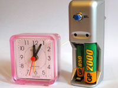
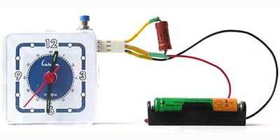

Измерение ёмкости аккумулятора
Что такое ёмкость аккумулятора, и как её измеряют
Ёмкость - это заряд Q новой батарейки или полностью заряженного аккумулятора. Заряд (количество электричества) измеряется в Кулонах: 1 Кулон = 1 Ампер × 1 секунда . Обычно ёмкость измеряется в единицах ампер·час или ма·час . Типичная ёмкость аккумулятора типоразмера ААА 1000 ма·час, АА - 2000 ма·час. Аккумулятор ёмкостью 1000 ма·час может давать ток 1000ма в течение 1 часа или 100ма в течение 10 часов. Если учесть напряжение U , то можно оценить запасённую в аккумуляторе энергию E = Q × U
Для определения ёмкости аккумулятора его полностью заряжают, затем разряжают заданным током I , и измеряют время T , за которое он разрядился. Произведение тока I на время T и есть ёмкость аккумулятора Q = I × T . Так же измеряется ёмкость батарейки, но после полного разряда аккумулятор можно снова зарядить, а батарейку уже нельзя использовать. Смысл в том, что вы измерите ёмкость батареек данного типа . Кстати, ёмкость щелочных батареек примерно равна ёмкости современных NiMh аккумуляторов того же типоразмера - AA(2000 ма·час), AAA(1000 ма·час).
Схема для измерения ёмкости
Предлагаемая схема разряжает аккумулятор через резистор R до напряжения почти полного разряда NiCd или NiMh элемента - примерно 1 вольт. Ток разряда равен I = U / R . ( О выборе тока разряда ) Для измерения времени разряда T используются часы, работающие от напряжения 1.5-2.5V. Для защиты аккумулятора от полного разряда применено твёрдотельное реле PVN012 . Оно отключает аккумулятор при снижении напряжения U до минимально допустимого Ue = 1V .

Как это работает
Аккумулятор надо полностью зарядить и подключить к устройству. Часы надо установить на 0 и нажать кнопку Start . В этот момент реле замыкает контакты 4-5 и 5-6. Начинается разряд аккумулятора через резистор R и подаётся напряжение на часы. Напряжение на аккумуляторе и резисторе постепенно снижается. Когда напряжение на резисторе R снизится до 1V реле размыкает контакты. Разряд прекращается и часы останавливаются.
По мере разряда аккумулятора управляющий ток через контакты реле 1-2 уменьшается примерно от 8 до 2mA. При управляющем токе 3mA сопротивление контактов 4-5 и 5-6 менее 0.04 Ом. Это достаточно мало, чтобы не учитывать при расчёте тока - если нужен ток разряда 1A, берите резистор R=1.2 Ом.
После прекращения разряда напряжение на аккумуляторе возрастает до 1.1-1.2V из-за внутреннего сопротивления элемента.
Потери на контактах

Измеритель в корпусе зарядника
При повторении этой схемы примите меры для уменьшения сопротивления контактов аккумулятора и разъёмов. При токе 0.5-1A на контактах можно потерять 0.1V и более, что ухудшит точность измерения. Такие же потери вызывает стальная пружина, используемая в некоторых держателях аккумулятора. Пружину и другие стальные контакты надо шунтировать медным проводом. Я сделал один из вариантов измерителя ёмкости аккумуляторов АА и ААА в корпусе от простого зарядного устройства, у которого были хорошие медные контакты.
Дополнительные вопросы
Саморазряд
Обратите внимание, что ёмкость свежезаряженных аккумуляторов выше, так как со временем часть заряда теряется из-за саморазряда . Чтобы узнать величину саморазряда, нужно измерить емкость сразу после зарядки, и измерить ещё раз через неделю (месяц) после зарядки. Саморазряд NiMh аккумуляторов может достигать 10% в неделю и более.
С какой точностью измеряется ёмкость?
Точное количество электричества можно определить интегрированием по времени dQ = 1/R × U(t) × dt .
По экспериментальным графикам разряда видно, что по мере разряда напряжение уменьшается примерно от 1.4V до 1.0V. Ток разряда U/R тоже уменьшается. При использовании в качестве среднего напряжения номинальной величины 1.2V получается точность не хуже 10%. Это справедливо, если аккумулятор используется примерно при таком же токе разряда, как и при измерении ёмкости.
Пример графиков разряда
Если при измерении был ток 0.5A, а при использовании 5A, то аккумулятор разрядится в несколько раз быстрее, чем ожидается. При токе использования 0.05А ёмкость окажется больше, чем при измерении. При токе 0.005A ёмкость может оказаться меньше измеренной из-за саморазряда аккумулятора в течение большого времени эксплуатации. Значительное отличие тока измерения от тока эксплуатации вносит погрешность более 10%.
Использование в устройстве стальных контактов вместо медных может увеличить погрешность на 10% и более, особенно при большом токе разряда.
Некоторая погрешность величины напряжения отсечки 1.0V связана с зависимостью вольт-амперной характеристики твёрдотельного реле от температуры. В комнатных условиях это даёт погрешность в 1-2%.

Каким должен быть ток разряда?
Надо выбирать такой ток, при котором обычно используется этот аккумулятор. Если ток разряда слишком большой, то из-за внутреннего сопротивления напряжение на аккумуляторе быстро снизится ниже 1 вольта, и измеренное значение ёмкости будет низким. Если выбрать слишком малый ток разряда, то измеренная ёмкость получится больше, чем аккумулятор реально выдаст при работе в вашем приборе.
Зачем два диода?
Диоды используются для защиты твёрдотельного реле при случайном обрыве резистора R . Если вы уверены, что обрыв невозможен, или вы измеряете ёмкость аккумуляторов с напряжением менее 1.4V ( один элемент AA или AAA ), то диоды можно убрать. При этом схема помещается внутри будильника, как у меня было сделано раньше. Резистор 5 Ом защищает реле при нажатии кнопки Start. Его тоже можно убрать, если включить кнопку параллельно контактам 4-5, как на упрощённой схеме.
Как измерить ёмкость литий-ионного аккумулятора?
| Um | Ue | I | R | r |
|---|---|---|---|---|
| 1.2 | 1.0 | 0.2 | 6.0 | 0 |
| 1.2 | 1.0 | 0.5 | 2.4 | 0 |
| 3.3 | 3.0 | 0.5 | 2.2 | 4.4 |
| 8.4 | 7.0 | 0.1 | 12 | 72 |
В этом случае к батарее подключается делитель напряжения по образцу, показанному на схеме. Используя делитель напряжения, можно измерить ёмкость батареи из нескольких аккумуляторов или ёмкость литий-ионного аккумулятора.
Требуемый ток разряда I при среднем напряжении Um обеспечивает сумма двух резисторов: R + r = Um / I .
Резистор R рассчитывается так, чтобы при конечном напряжении на батарее Ue , напряжение на резисторе R стало равно 1V: R = (Um / I) × (1V / Ue) .
Как проверить ёмкость аккумулятора по напряжению?
По напряжению ёмкость определить нельзя. Для каждого типа батарей и аккумуляторов есть типичные кривые разряда. По ним можно оценить отношение заряда к ёмкости ( процент заряда ). Я использую зарядное устройство Ansmann , которое для такой оценки измеряет напряжение при заданном токе разряда. Однако у NiMh аккумуляторов не только ёмкость, но и рабочее напряжение уменьшается с возрастом. В некоторых случаях Ansmann давал оценку 30% в то время, как измерение до полного разряда давало 80%.
Как измерить ёмкость аккумулятора без этой схемы?
Подключите к заряженному аккумулятору резистор R и вольтметр. Следите по часам. Через некоторое время T напряжение U снизится до минимально допустимого. В этот момент отключите резистор. Ёмкость равна Q = T × U / R
В чём отличие от схемы, которая была на сайте раньше?
0.
Старая схема
1. Вместо 1.3-1.1V на часы подаётся 2.6-2.2V
2. Вместо выключателя для дополнительного элемента
питания использован контакт реле, и теперь отключение обоих аккумуляторов
происходит автоматически.
3. Добавлена защита реле от обрыва резистора
R
Что такое внутреннее сопротивление аккумулятора и как его измерить?
Этот раздел перенесён на отдельную страницу "Внутреннее сопротивление"
Автомобильный аккумулятор (АКБ)
Автомобиль не заводится, хотя зарядное устройство работает нормально, и показывает, что аккумулятор полностью заряжен. Дело не в ёмкости. После нескольких слишком глубоких разрядов внутреннее сопротивление увеличилось, и аккумулятор больше не может выдать ток, необходимый для работы стартёра. Придётся купить новый аккумулятор, и больше не допускать глубокого разряда.
Как измерить ёмкость АКБ
Для оценки ёмкости можно использовать лампу от фары в качестве нагрузочного сопротивления. Это должна быть лампа накаливания, например, галогеновая, но не светодиодная. Лампа 60вт потребляет ток 5А. Подключите параллельно аккумулятору вольтметр и лампу. Следите по часам. Когда напряжение снизится до 11в - разряд закончился - отключите лампу. Если это не сделать, то аккумулятор испортится. Если до окончания разряда прошло 10 часов, то ёмкость вашего аккумулятора 50 а·час. Если 5 часов, то 25 а·час. Этот тест не гарантирует, что машина заведётся, так как стартёру нужно не 5А, а 100-150А.
Внутреннее сопротивление автомобильного аккумулятора
Лампу от фары можно использовать для оценки внутреннего сопротивления. При токе 100А на внутреннем сопротивлении не должно теряться более 1 вольта. Соответственно, при токе 5А не должно теряться более 0.05 вольта (1в * 5А / 100А). Подключите параллельно аккумулятору вольтметр и лампу. Запомните величину напряжения. Отключите лампу. Обратите внимание, насколько увеличилось напряжение. Если, допустим, напряжение возросло на 0.2 вольта, то аккумулятор испорчен, а если на 0.02 вольта, то он исправен. При токе 100А потеря напряжения будет всего 0.4в (0.02в * 100А / 5А).
Конденсатор вместо аккумулятора?
Ёмкость конденсатора определяется немного по другому: C = Q / U
Ёмкость зависит от геометрии конденсатора. Если увеличить расстояние L между пластинами конденсатора, то заряд Q и напряжённость электрического поля между пластинами E не изменятся, а разность потенциалов U = E × L увеличится. Поэтому ёмкость конденсатора C уменьшится.
Можно ли использовать конденсатор вместо аккумулятора или наоборот?
В некоторых случаях можно, и используют. Главное отличие конденсатора от аккумулятора при использовании в качестве источника тока в том, что по мере разряда напряжение на аккумуляторе долго остаётся стабильным, а на конденсаторе оно снижается пропорционально оставшемуся заряду.
capacitor 3000F 2.7V
Какой конденсатор мог бы заменить обычный аккумулятор ААА (1000 ма·час)?
Q = 1000 ма·час = 3600 А·сек
= 3600 Кулон
C = Q / U = 3600 К / 1.2 В = 3000
Фарад
Такие конденсаторы "Ионисторы" по принципу устройства приближаются к аккумуляторам, так как обкладками конденсатора служит химический двойной электрический слой на границе электрода с электролитом.
Почему портятся аккумуляторы
Этот раздел находится на странице "Пример разводки платы"
2004